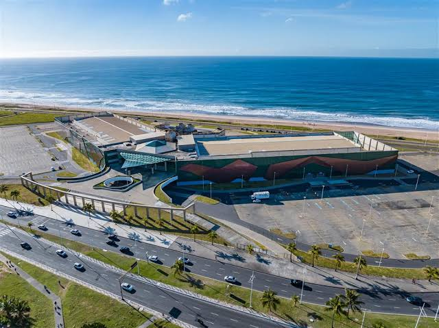
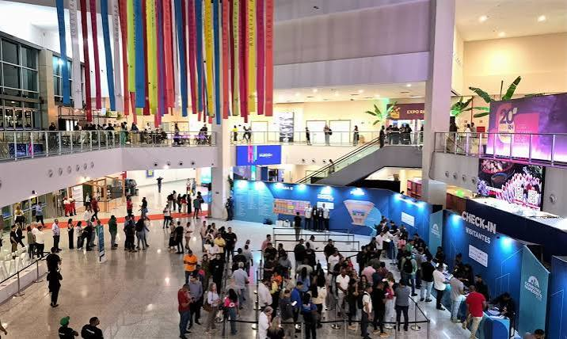
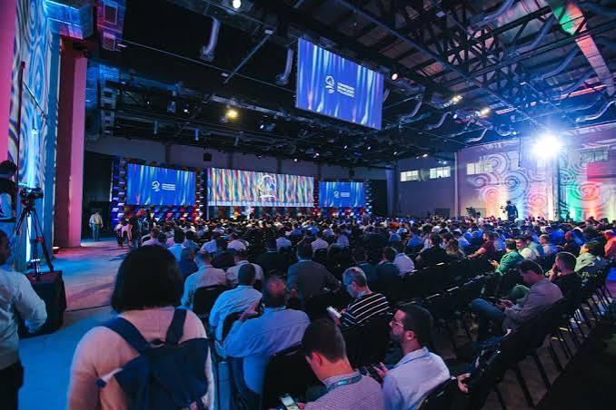

TechDay Bahia 2026
O maior encontro de tecnologia e inovação de Salvador!
Data: 15 de Outubro de 2026
Local: Centro de Convenções de Salvador - Av. Octávio Mangabeira, Salvador - BA
Sobre o Evento
O TechDay Bahia é um evento feito para estudantes, profissionais e entusiastas da tecnologia. Nosso objetivo é conectar a comunidade baiana com as principais tendências do mercado de desenvolvimento de software, inteligência artificial e inovação digital.
Venha viver um dia de muito aprendizado, networking e experiências práticas na capital baiana!
Programação do Dia
Confira a ordem das apresentações no palco principal:
- 08:30 - Credenciamento e Welcome Coffee
- 09:30 - Abertura oficial do TechDay Bahia
- 10:00 - Palestra: O Futuro do Desenvolvimento Web com IA
- 12:00 - Horário para Almoço e Networking
- 14:00 - Palestra: Carreiras em Tecnologia para Iniciantes
- 16:30 - Painel de Encerramento e Sorteio de Brindes
Palestrantes Confirmados
Rosangela Silva
Engenheira de Software sênior e especialista em Inteligência Artificial.
João Claudio

Desenvolvedor Web Front-End e fundador da comunidade Tech Salvador.
Ramon Guimaraes

Desenvolvedor Front-End e fundador da GameScorp
Leila Pereira

Desenvolvedora e Empresaria no Setor de Inovações e Tecnologia Hospitalar
Joao Cancelo

Desenvolvedor e Empresario na área de Marketing digital na Era de IA
Lista de Atividades do Evento
Além das palestras principais, você poderá participar de diversas atrações:
- Workshops práticos de programação em HTML e CSS;
- Feira de comunidades de tecnologia da Bahia;
- Espaço para mentoria de carreira e revisão de currículo;
- Área de games e desafios de código;
- Área de Inovação Senai Cimatec;
- Sessões de networking com empresas parceiras.
Informações para Inscrição
As vagas são limitadas! Garanta seu ingresso antecipadamente.
Valores:
- Estudantes: R$ 20,00 (mediante comprovação)
- Profissionais: R$ 40,00
Para garantir seu lugar, faça sua inscrição no site oficial parceiro:
Clique aqui para se inscrever no TechDay Bahia


